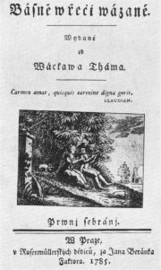
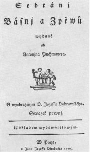
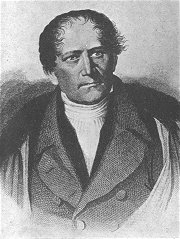
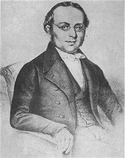
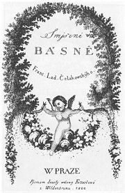
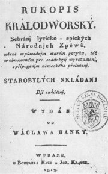

Thámùv almanach Básnì v øeèi vázané
|
OBROZENECKÁ LITERATURA
V dobì národního obrození nebyla beletrie pouhou umìleckou literaturou, ale musela plnit mnoho jiných funkcí. Spisovatelé se jejím prostøednictvím hlásili k èeskému národu, prokazovali svoje vlastenectví a usilovali o „probuzení“ celé spoleènosti. Umìlecká kvalita ustupovala touze vychovávat správné Èechy a probouzet v nich pocit vlastenectví, sounáležitosti a národní hrdosti. Také mìla získat ménì vzdìlané ètenáøe a pøesvìdèit rùzné pochybovaèe a národní „odrodilce“. Pøípad Rukopisu královédvorského a zelenohorského ukazuje, že umìlci byli ochotni pro vzkøíšení národního sebevìdomí udìlat cokoliv. Literatura suplovala také politiku, protože absolutistický systém v habsburské monarchii nedovoloval Èechùm, ani dalším národùm, aby mìli vlastní zastoupení. Literární tvorbu navíc omezovala cenzura, která se ještì zpøísnila kvùli strachu z myšlenek Velké francouzské revoluce, Napoleonových výbojù a povstání Polákù proti ruské nadvládì. Pøestože tvorba buditelù nevynikala umìleckou kvalitou, podaøilo se jim dosáhnout cíle. Jejich myšlenky se plnì prosadily a na konci 19. století už nebyly pochybnosti o tom, že se èeskou literaturu podaøilo „vzkøísit“ a že jí nehrozí zánik.
|
Dùležitým zdrojem inspirace a vzorem pro mnoho èeských obrozencù byla lidová slovesnost. Vìdci a další nadšenci se vìnovali jejímu sbírání a vydávání. Ovlivnila také tvorbu umìleckou (ohlasová poezie). Prostøednictvím pøekladù se èeský ètenáø mohl seznámit s klasickými díly svìtové literatury. Pro bìžné publikum byly urèeny knížky lidového ètení. V Krameriovì nakladatelství Èeská expedice vycházely staré èeské knihy (Letopisy trojánské, Mandevillùv cestopis, Ezopovy bajky, Pøíhody Václava Vratislava z Mitrovic...).
|
Poèátky novoèeské poezie

Puchmajerùv almanach Sebrání básní a zpìvù
|
Poèátky novoèeské poezie
Dramatik a herec Václav Thám (1765-1816) uspoøádal almanach Básnì v øeèi vázané (1785), který obsahoval ukázky ze starší èeské poezie, pøeklady z nìmèiny (Gleim, Wiess, Bürger) a „pùvodní“ anakreontskou poezii. O nìco kvalitnìjší byl pokus Antonína Jaroslava Puchmajera (1769-1820), který pøipravil almanach Sebrání básní a zpìvù (1795) a pro básníky vytvoøil Rýmovník (slovník rýmù), je také autorem básní Óda na Jana Žižku a Óda na jazyk èeský. Ménì významnými básníky byli Milota Zdirad Polák (1788-1856), autor rozsáhlé skladby Vznešenost pøírody, Šebestián Hnìvkovský (Vnislav a Bìla, smìšnohrdinská báseò Dìvín), Josef Krasoslav Chmelenský, Jablonský, Kamarýt, Langer nebo Vinaøický.
|
Poèátky novoèeské poezie byly ve znamení tápání. Umìlci hledali, který metrický systém je pro èeštinu nejvhodnìjší. Nìkteøí zkoušeli èasomíru (Jungmann, Polák, Kollár), kterou prosazoval už Jan Amos Komenský, jiní verš tónický (Èelakovský). Nakonec se ukázal jako nejlepší systém sylabotónický (Dobrovský, Puchmajer). Dalším problémem bylo, že se prùbìžnì mìnily pøedstavy o podobì spisovné èeštiny a pravopisu.
Která z uvedených ukázek se ti líbí nejvíce? Proè?
Která se ti vùbec nelíbí? Proè?
Co si myslíš o prvních novoèeských básních?
Jaký je rozdíl mezi èasomìrnou, tónickou a sylabotónickou prozódií?
Zkus napsat tøi básnì se stejným obsahem, ale v rùzných systémech.
|
Jan Kollár (1793-1852)
Kolár se narodil ve slovenských Mošovcích, studoval evangelické bohoslovectví v nìmecké Jenì a pracoval jako pastor v uherském Budínì.
Prosazoval myšlenku slovanské vzájemnosti (sjednocení všech slovanských zemí pod vládou Ruska, v té dobì jediného samostatného státu Slovanù) a užívání èesko-slovenského jazyka (èeština doplnìná o slovenské tvary a nìkterá slova). Zemøel ve Vídni.
|
Jan Kollár: Slávy dcera
Jádrem knihy Slávy dcera byla Kollárova sbírka milostných sonetù Básnì vìnovaných Mínì (jeho pozdìjší manželka Nìmka Friderika Wilhelmina Schmidtová, kterou opìvoval jako dceru slovanské bohynì Slávy). Kollár sbírku celý život doplòoval, takže ji nakonec tvoøil èasomìrný Pøedzpìv, 645 znìlek a Výklad èili Pøímìtky a vysvìtlivky ku Slávy dceøe. Sonety rozdìlil do 5 zpìvù – 1. Sála, 2. Vltava, Labe, Rén, 3. Dunaj, 4. Léthé a 5. Acheron (podle øek, jejichž okolím ho provází milovaná Mína a bùh lásky Mílek). Novìjší básnì byly pøedevším vlastenecké.
|

Jan Kollár
Která z uvedených znìlek tì zaujala nejvíce? Proè?
Která díla svìtové literatury ti pøipomíná rámcový dìj Kollárovy sbírky?
|
František Ladislav Èelakovský
(1799-1825)

Èelakovský pocházel ze Strakonic, zemøel v Praze. Živil se jako vychovatel, redaktor (Pražské noviny, Èeská vèela) a pozdìji jako profesor slavistiky ve Vratislavi a Praze. Finanènì ho podporoval kníže Kinský. Pod pseudonymem Žofie Jandová se úspìšnì vydával za první novoèeskou básníøku. Lidovou slovesnost publikoval v knihách Slovanské národní písnì (3 svazky) a Mudrosloví národu slovanského ve pøíslovích. Sám napsal básnické sbírky Smíšené básnì, Ohlas písní ruských (1829), Ohlas písní èeských (1839) a Rùže stolistá. Posmrtnì vyšla jeho sbírka epigramù Padesátka z mé tobolky.
|
Èelakovský: Ohlas písní ruských
Ohlas písní ruských vychází pøedevším ze støedovìkých bohatýrských zpìvù – bylin, které vyprávìly o ruských bohatýrech (Ilja Muromec, Èurila Plenkoviè, Ilja Volžanín). Vìtšinou jde o básnì epické nebo lyrickoepické. Èelakovský v nich èasto využívá nerýmovaný tónický verš (založený na pevném poètu pøízvukù), rusismy a další prvky typické pro ruskou folklórní poezii.
Èelakovský: Ohlas písní èeských
Sbírka Ohlas písní èeských obsahuje hlavnì básnì lyrické. Èelakovský se v nich pokusil vžít do mentality èeského lidu, kterou znaènì idealizuje a pøizpùsobuje preromantickému pohledu na svìt. Zdùrazòuje milostná témata, hravost, prostotu a zámìrnì se vyhýbá drsnému humoru, kramáøské písni nebo erotické tvorbì.
|
Ohlasová tvorba
Ohlasy jsou umìlé literární texty, které vycházejí z lidové slovesnosti. Psala je vìtšina obrozencù (Èelakovský, Mácha, Erben...) i nìkteøí autoøi 20. století (Kainar). V souèasné dobì mají podobu tzv. pseudolidové tvorby, které se soustavnì vìnují folkoví písnièkáøi (Hutka, Redl).

Èelakovský: Smíšené básnì
Srovnej Èelakovského ohlasy ruské a èeské lidové tvorby.
Které z uvedených básní jsou lyrické a které epické?
Která báseò se ti líbí nejvíce? Proè?
|
František Jaromír Rubeš
(1814-1853)
Rubeš vystudoval práva. Vydával první èeský humoristický èasopis Paleèek, milovník žertu a pravdy (1841-1847) a psal veselé básnì – parodie Máchova Máje Horymírùv skok, sbírky Deklamovánky a písnì (6 dílù). Jeho nejlepší prózou je Pan amanuensis na venku. Rubeš zemøel na souchotiny.
Jak dosahuje Rubeš komického úèinku?
Co si bere na mušku?
|
František Jaromír Rubeš: Pan amanuensis na venku aneb Putování za novelou
Krátká humoristická povídka Pan amanuensis na venku vypráví o trampotách absolventa práv, který má za úkol napsat novelu. Vypraví se tedy na výlet, aby bìhem putování naèerpal inspiraci...
|
Poèátky novoèeské prózy
Próza byla v tvorbì obrozencù zastoupena mnohem ménì než poezie i drama. Vìnoval se jí dramatik Prokop Šedivý (1764-1810), autor povídek Èeské amazonky aneb Dìvèí boj v Èechách pod správou rekynì Vlasty a Mnislav a Svìtivína aneb Pøíbìhové prvních obyvatel okoøského zámku. Josef Linda (1789-1834) napsal první èeský historický román Záøe nad pohanstvem aneb Václav a Boleslav. Prózu psali ještì dramatikové Klicpera (Toèník) a Tyl (Poslední Èech, Rozervanec).
|

Skladba Èestmír a Vlaslav z Rukopisu královédvorského
Znáš další èeské nebo zahranièní texty, které dnes považujeme za padìlky?
|
Rukopis královédvorský a zelenohorský
Rukopis královédvorský údajnì objevil Václav Hanka v roce 1817 ve vìži dìkanského kostela ve Dvoøe Králové. Obsahuje skladby epické (Oldøich, Beneš Heømanov, Jaroslav, Èestmír a Vlaslav, Ludiše a Lubor, Záboj, lyrickoepické (Zbyhoò, Jelen) i lyrické (Kytice, Jahody, Róže, Žezhulice, Opuštìná, Skøivánek). Tento zlomek rozsáhlejšího celku mìl dokazovat žánrovou pestrost a starobylost (podoba písma odpovídá konci 13. století) èesky psané literatury. Rukopis zelenohorský pøišel v roce 1818 jako anonymní poštovní zásilka urèená hrabìti Kolovratovi. Obsahuje zlomek skladby Libušin soud, který mìl ukázat demokratiènost èeské spoleènosti na pøelomu 9. a 10. století.
|
Zkoumání padìlkù
Nález rukopisù byl nadšenì pøijat všemi obrozenci. Ojedinìlé hlasy proti jejich pravosti (Dobrovský, zahranièní vìdci) nebyly brány vážnì a tyto památky se staly souèástí kulturní tradice. Že se jedná o falzifikáty, se pokusili dokázat vìdci sdružení kolem èasopisu Athenaeum. Od roku 1886 zde publikovali své rozbory sociologické (Masaryk), jazykové (Gebauer), historické (Goll), estetické (Hostinský), literární (Vlèek) a další. Ještì v této dobì si vysloužili tvrdou kritiku od èeských nacionalistù! V 60. letech 20. století probìhl v Kriminalistickém ústavu chemický prùzkum rukopisù, který potvrdil, že jde o velmi kvalitní padìlky. Otázkou zùstává, kdo je jejich autorem. Zøejmì to byl samotný nálezce Hanka, jeho pøítel Linda a malíø Horèièka.
|
Internetové stránky
RZK, rozcestník
Václav Hanka, rozcestník
Kramáøská píseò o rukopisných bojích
Polák: Cesta do Itálie
Hnìvkovský: Dìvín
Langer: Bohdanecký rukopis, Èeské krakováèky
Redl, texty písní
Hutka, texty písní
|
Doporuèená èetba
Èelakovský, František Ladislav: Ohlas písní ruských, Ohlas písní èeských, Praha 1954
Ivanov, Miroslav: Tajemství RKZ, Mladá fronta, Praha 1969
Kramerius a jiní: Zazdìná sleèna a jiné pøíhody pro vyražení, Praha 1980
Kramerius, Václav Rodomil: Knížky lidového ètení, Odeon, Praha 1988
Mráz, Andrej: Ján Kollár, Bratislava 1952
Poèátky novoèeského básnictví, Èeskoslovenský spisovatel, Praha 1950
Preclík, V.: František Jaromír Rubeš, Praha 1948
Rubeš, František: Humoresky, ELK, Praha 1941
Rukopis královédvorský a zelenohorský, Neklan, Praha 1997
Štìpánek, Vladimír: Z dìjin obrozenské literatury, Èeskoslovenský spisovatel, Praha 1988
Urban: Poslední teèka za rukopisy (mystifikace)
Vodièka, Felix: Poèátky krásné prózy novoèeské, Praha 1948
Závodský, Artur: František Ladislav Èelakovský, Melantrich, Praha 1982
|
Pøiprav si referát o nìkteré z uvedených knih nebo internetových stránek.
Tipy
Èerný: O milostných vztazích F.L.Èelakovského a Jak úèinkovalo kdysi na vlastence èeské jméno Josef, ukázky z knihy Obrázky z dob našeho probuzení zveøejnìné v èasopise Okruh 1995/1
Èeská poezie 19. století,
CD-ROM, ÚÈL AV ÈR (kompletní texty 600 básnických sbírek a almanachù)
|
|